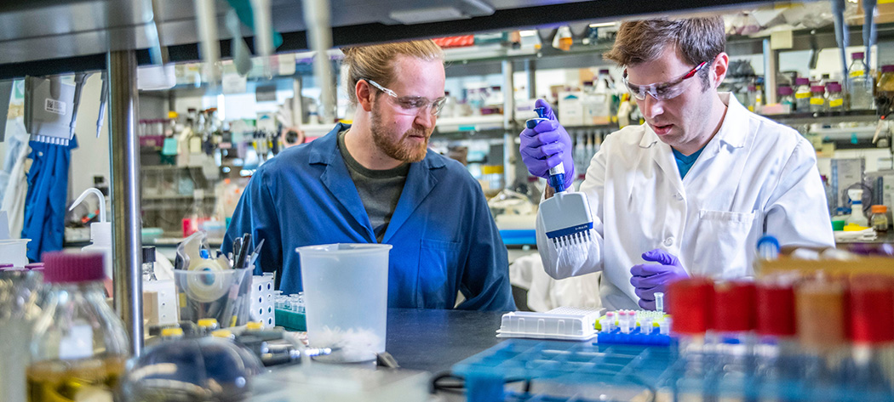

What is the link between Goal 7 and Goal 11?
It is my belief that sustainable cities and communities simply wont be possible without the use of affordable and clean energy and clean energy will not be produced if sustainable cities and communities are not sought after. This is because cities will only be sustainable if their energy is sustainable. Energy will not be sustainable if it is not both clean and affordable because people will not use it. However, clean and affordable will not be taken very seriously unless cities require it which is why the energy is also dependant on the city.
Both these goals are absolutely neccessary for society to continue to develop and prosper. If not, we will not be be able to handle the population growth, or the people using electricity for the first time. As time goes on, if these goals are not met we will remain stagnant for decades. People will not have access to the same quality of living and housing and poverty will rise. It is imperative that these goal be met and it is up to you to decide what role you will take to help these goals be met.